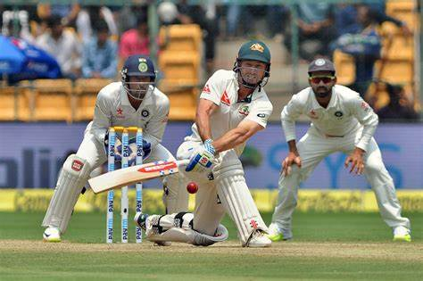
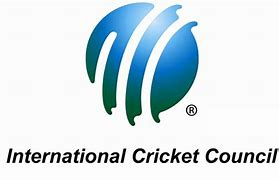

Cricket is a bat-and-ball game played between two teams of eleven players on a field at the centre of which is a 22-yard (20-metre) pitch with a wicket at each end, each comprising two bails balanced on three stumps.
It is generally believed that cricket originated as a children's game in the south-eastern counties of England, sometime during the medieval period.[4] Although there are claims for prior dates, the earliest definite reference to cricket being played comes from evidence given at a court case in Guildford in January 1597 (Old Style, equating to January 1598 in the modern calendar).
The game underwent major development in the 18th century to become England's national sport.Its success was underwritten by the twin necessities of patronage and betting.[38] Cricket was prominent in London as early as 1707 and, in the middle years of the century, large crowds flocked to matches on the Artillery Ground in Finsbury.[citation needed] The single wicket form of the sport attracted huge crowds and wagers to match, its popularity peaking in the 1748 season.[39] Bowling underwent an evolution around 1760 when bowlers began to pitch the ball instead of rolling or skimming it towards the batter. This caused a revolution in bat design because, to deal with the bouncing ball, it was necessary to introduce the modern straight bat in place of the old "hockey stick" shape

The International Cricket Council (ICC), which has its headquarters in Dubai, is the global governing body of cricket. It was founded as the Imperial Cricket Conference in 1909 by representatives from England, Australia and South Africa, renamed the International Cricket Conference in 1965 and took up its current name in 1989.[118]
The ICC in 2017 has 105 member nations, twelve of which hold full membership and can play Test cricket.[120] The ICC is responsible for the organisation and governance of cricket's major international tournaments, notably the men's and women's versions of the Cricket World Cup. It also appoints the umpires and referees that officiate at all sanctioned Test matches, Limited Overs Internationals and Twenty20 Internationals.
